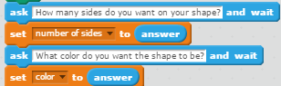

| Core4 Concept | Technical Definition | Real-Life Analogy | Python Example | Scratch Example | |||
|---|---|---|---|---|---|---|---|
| Variables | "A variable is a value that can change, depending on conditions or on information passed to the program." | The battery percentage on your phone can be a variable because the value of it can change depending on how you use it. |  | | for sides in range(sides): john.right(ex_angle) john.forward(length) |
A loop in real life can be tying your shoelaces. When your shoelaces become untied, you are going to keep tying it until you tie a knot. | |
| Conditionals | "A conditional statement is a set of rules performed if a certain condition is met." name = "Kaylee" if user input == "yes" print(name) |
|